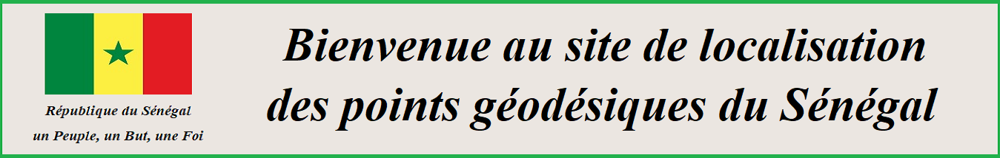

<!doctype html>
<html lang="fr">
        <head>
        <meta charset="utf-8">
        <meta http-equiv="X-UA-Compatible" content="IE=edge">
        <meta name="viewport" content="initial-scale=1,user-scalable=no,maximum-scale=1,width=device-width">
        <meta name="mobile-web-app-capable" content="yes">
        <meta name="apple-mobile-web-app-capable" content="yes">
        <link rel="stylesheet" href="css/leaflet.css"/>
	    <link rel="stylesheet" href="css/L.Control.Locate.min.css"/>
        <link rel="stylesheet" href="css/fontawesome-all.min.css"/>
        <link rel="stylesheet" href="css/leaflet-control-geocoder.Geocoder.css"/>
	    <link rel="stylesheet" href="css/q.sarr.2.css"/>
        <link rel="stylesheet" href="css/lf.sarr.ch.css"/>
	    <link rel="stylesheet" href="css/s.abl.sarr.css"/>
	    <link rel="stylesheet" href="css/leaflet.groupedlayercontrol.min.css"/>
	    <link rel="stylesheet" href="css/leaflet.draw.css"/>
        <link rel="stylesheet" href="css/leaflet.StyleEditor.css"/>
        <link rel="stylesheet" href="css/leaflet.zoomhome.css"/>
	    <link rel="stylesheet" href="css/lf.sarr.ch.css"/>
	    <link rel="stylesheet" href="css/leaflet.fullscreen.css"/>
	    <link rel="stylesheet" href="css/mayer.css"/>
	    <link rel="stylesheet" href="css/leaflet-panel-layers.css"/>		
        <link rel="stylesheet" href="legend/icons.css"/>
        <style>
        html, body, #map {
            width: 100%;
            height: 100%;
            padding: 0;
            margin: 0;
        }
        </style>
        <title>Acceuil | RRS</title>    		
		        <figure>
                    <figcaption></figcaption>
                </figure>
    </head>   
    <body>
        	
		<div id="map"></div>
    <div id="footer">
            <footer class="wrapper">
                <div class="row">
				<section id="footerAddress">
					<figure>
						<figcaption>INFORMATIONS DE CONTACT</figcaption>
					</figure>
					<address> 
					    <p>ABLAYE SARR</p>
						<p>Ingénieur de Conception Géomètre Topographe et Développeur</p>
						<p>inggeotoposarr@gmail.com</p>
						<p>Dakar, Sénégal</p></br>
						<p>Ensemble, nous servirons le Sénégal pour un lendemain meilleur.</p>
					</address>
				</section>
				<section id="footerLegal">
					<h1>LIENS UTILES</h1>
					<ul>
						<li><a href="http://www.impotsetdomaines.gouv.sn/">DGID : Direction Générale des Impôts et des Domaines </a></li>
						<li><a href="https://dtgc.au-senegal.com">DTGC : Direction des Travaux Géographiques et Cartographiques</a></li>
						<li><a href="https://www.anat.sn">ANAT : Agence Nationale pour l'Aménagement du Territoire</a></li>
						<li><a href="https://www.urbanisme.gouv.sn">DGUA : Direction Générale de l'Urbanisme et de l'Architecture</a></li>
					</ul>
				</section>
				<section id="footerLanguage">
					<h1>PARTAGER CETTE PAGE</h1>
					<div class="a2a_kit a2a_kit_size_32 a2a_default_style" id="a2a">
                                <a class="a2a_dd" href="https://www.addtoany.com/share"></a>
                                <a class="a2a_button_linkedin"></a>
								<a class="a2a_button_whatsapp"></a>
                                <a class="a2a_button_twitter"></a>
                                <a class="a2a_button_facebook"></a>
                                <a class="a2a_button_google_plus"></a>
                    </div>
                    <script async src="https://static.addtoany.com/menu/page.js"></script>
				</section>
            </div>
			<section id="copyright">
				<a href="#"><span class="fa fa-mobile"></span>Retour en haut de page</a>
				<p>&copy; Copyright 2022 - SARR</p>
			</section>
            </footer>
        </div>
        <script src="js/leaflet.js"></script>
		<script src="js/L.Control.Locate.min.js"></script>
        <script src="js/leaflet-svg-shape-markers.min.js"></script>
        <script src="js/leaflet.rotatedMarker.js"></script>
        <script src="js/leaflet.pattern.js"></script>
        <script src="js/leaflet-hash.js"></script>
        <script src="js/Autolinker.min.js"></script>
        <script src="js/rbush.min.js"></script>
        <script src="js/labelgun.min.js"></script>
        <script src="js/labels.js"></script>
        <script src="js/leaflet-control-geocoder.Geocoder.js"></script>
        <script src="data/rrs_mbour.js"></script>
        <script src="data/rrs_dakar.js"></script>
        <script src="data/2emeordre.js"></script>
        <script src="data/1erordre.js"></script>
        <script src="data/rrs_matam.js"></script>
        <script src="js/leaflet.groupedlayercontrol.min.js"></script>
	    <script src="js/exampledata.js"></script>
	    <script src="js/leaflet.draw.js"></script>
        <script src="js/Leaflet.StyleEditor.js"></script>
        <script src="js/leaflet.zoomhome.min.js"></script>
	    <script src="js/leaflet.sarr.ch.js"></script>
	    <script src="js/ablaye.sarr.exp.js"></script>
	    <script src="js/bundle.js"></script>
	    <script src="js/Leaflet.fullscreen.min.js"></script>
        <script src="js/leaflet-panel-layers.js"></script>
        <script>
        var highlightLayer;
        function highlightFeature(e) {
            highlightLayer = e.target;

            if (e.target.feature.geometry.type === 'LineString') {
              highlightLayer.setStyle({
                color: '#ffff00',
              });
            } else {
              highlightLayer.setStyle({
                fillColor: '#ffff00',
                fillOpacity: 1
              });
            }
            highlightLayer.openOn();
        }
		var TILES_URL = 'https://{s}.tile.osm.org/{z}/{x}/{y}.png',
                INITIAL_LOCATION = [14.763474,-17.3746337],
                INITIAL_ZOOM = 12,
                ATTRIBUTION = '&copy; <a href="https://osm.org/copyright">OpenStreetMap</a> contributors';
            let map = L.map('map',{
                   zoomControl:false, maxZoom:28, minZoom:1,
			       layers: [ExampleData.Basemaps.Maps],
			       fullscreenControl: {
                     pseudoFullscreen: false
                                      }
                  				  }).setView(INITIAL_LOCATION, INITIAL_ZOOM)
        var hash = new L.Hash(map);
        map.attributionControl.setPrefix('<a>Leaflet | @ OpenStreetMap Contributors</a>');
        var autolinker = new Autolinker({truncate: {length: 30, location: 'smart'}});
        L.control.locate({locateOptions: {maxZoom: 19}}).addTo(map);
        var bounds_group = new L.featureGroup([]);
        function setBounds() {
        }
        function pop_rrs_mbour(feature, layer) {
            layer.on({
                mouseout: function(e) {
                    for (i in e.target._eventParents) {
                        e.target._eventParents[i].resetStyle(e.target);
                    }
                    if (typeof layer.closePopup == 'function') {
                        layer.closePopup();
                    } else {
                        layer.eachLayer(function(feature){
                            feature.closePopup()
                        });
                    }
                },
                mouseover: highlightFeature,
            });
            var popupContent = '<table>\
                    <tr>\
                        <th scope="row"></th>\
                        <td>' + (feature.properties['Photo :'] !== null ? '' : '') + '</td>\
                    </tr>\
                </table>';
            layer.bindPopup(popupContent, {maxHeight: "auto"});
        }

        function style_rrs_mbour_0() {
            return {
                pane: 'pane_rrs_mbour',
				shape: 'triangle',
                radius: 8.0,
                opacity: 1,
                color: 'rgba(35,35,35,1.0)',
                dashArray: '',
                lineCap: 'butt',
                lineJoin: 'miter',
                weight: 1,
                fill: true,
                fillOpacity: 1,
                fillColor: 'rgba(255,255,0,1.0)',
                interactive: true,
            }
        }
        map.createPane('pane_rrs_mbour');
        map.getPane('pane_rrs_mbour').style.zIndex = 403;
        map.getPane('pane_rrs_mbour').style['mix-blend-mode'] = 'normal';
        var layer_rrs_mbour = new L.geoJson(json_rrs_mbour, {
            attribution: '',
            interactive: true,
            dataVar: 'json_rrs_mbour',
            layerName: 'layer_rrs_mbour',
            pane: 'pane_rrs_mbour',
            onEachFeature: pop_rrs_mbour,
            pointToLayer: function (feature, latlng) {
                var context = {
                    feature: feature,
                    variables: {}
                };
                return L.shapeMarker(latlng, style_rrs_mbour_0(feature));
            },
        });
        bounds_group.addLayer(layer_rrs_mbour);
        map.addLayer(layer_rrs_mbour);
        function pop_rrs_dakar(feature, layer) {
            layer.on({
                mouseout: function(e) {
                    for (i in e.target._eventParents) {
                        e.target._eventParents[i].resetStyle(e.target);
                    }
                    if (typeof layer.closePopup == 'function') {
                        layer.closePopup();
                    } else {
                        layer.eachLayer(function(feature){
                            feature.closePopup()
                        });
                    }
                },
                mouseover: highlightFeature,
            });
            var popupContent = '<table>\
                    <tr>\
                        <th scope="row"></th>\
                        <td>' + (feature.properties['Photo :'] !== null ? '' : '') + '</td>\
                    </tr>\
                </table>';
            layer.bindPopup(popupContent, {maxHeight: "auto"});
        }
        function style_rrs_dakar_0() {
            return {
                pane: 'pane_rrs_dakar',
                shape: 'triangle',
                radius: 8.0,
                opacity: 1,
                color: 'rgba(35,35,35,1.0)',
                dashArray: '',
                lineCap: 'butt',
                lineJoin: 'miter',
                weight: 1,
                fill: true,
                fillOpacity: 1,
                fillColor: 'rgba(22,253,38,1.0)',
                interactive: true,
            }
        }
        map.createPane('pane_rrs_dakar');
        map.getPane('pane_rrs_dakar').style.zIndex = 404;
        map.getPane('pane_rrs_dakar').style['mix-blend-mode'] = 'normal';
        var layer_rrs_dakar = new L.geoJson(json_rrs_dakar, {
            attribution: '',
            interactive: true,
            dataVar: 'json_rrs_dakar',
            layerName: 'layer_rrs_dakar',
            pane: 'pane_rrs_dakar',
            onEachFeature: pop_rrs_dakar,
            pointToLayer: function (feature, latlng) {
                var context = {
                    feature: feature,
                    variables: {}
                };
                return L.shapeMarker(latlng, style_rrs_dakar_0(feature));
            },
        });
        bounds_group.addLayer(layer_rrs_dakar);
        map.addLayer(layer_rrs_dakar);
        function pop_2emeordre(feature, layer) {
            layer.on({
                mouseout: function(e) {
                    for (i in e.target._eventParents) {
                        e.target._eventParents[i].resetStyle(e.target);
                    }
                    if (typeof layer.closePopup == 'function') {
                        layer.closePopup();
                    } else {
                        layer.eachLayer(function(feature){
                            feature.closePopup()
                        });
                    }
                },
                mouseover: highlightFeature,
            });
            var popupContent = '<table>\
                    <tr>\
                        <th scope="row"></th>\
                        <td>' + (feature.properties['Photo :'] !== null ? '' : '') + '</td>\
                    </tr>\
                </table>';
            layer.bindPopup(popupContent, {maxHeight: "auto"});
        }

        function style_2emeordre_0() {
            return {
                pane: 'pane_2emeordre',
                shape: 'triangle',
                radius: 8.0,
                opacity: 1,
                color: 'rgba(35,35,35,1.0)',
                dashArray: '',
                lineCap: 'butt',
                lineJoin: 'miter',
                weight: 1,
                fill: true,
                fillOpacity: 1,
                fillColor: 'rgba(8,8,247,1.0)',
                interactive: true,
            }
        }
        map.createPane('pane_2emeordre');
        map.getPane('pane_2emeordre').style.zIndex = 405;
        map.getPane('pane_2emeordre').style['mix-blend-mode'] = 'normal';
        var layer_2emeordre = new L.geoJson(json_2emeordre, {
            attribution: '',
            interactive: true,
            dataVar: 'json_2emeordre',
            layerName: 'layer_2emeordre',
            pane: 'pane_2emeordre',
            onEachFeature: pop_2emeordre,
            pointToLayer: function (feature, latlng) {
                var context = {
                    feature: feature,
                    variables: {}
                };
                return L.shapeMarker(latlng, style_2emeordre_0(feature));
            },
        });
        bounds_group.addLayer(layer_2emeordre);
        map.addLayer(layer_2emeordre);
        function pop_1erordre(feature, layer) {
            layer.on({
                mouseout: function(e) {
                    for (i in e.target._eventParents) {
                        e.target._eventParents[i].resetStyle(e.target);
                    }
                    if (typeof layer.closePopup == 'function') {
                        layer.closePopup();
                    } else {
                        layer.eachLayer(function(feature){
                            feature.closePopup()
                        });
                    }
                },
                mouseover: highlightFeature,
            });
           var popupContent = '<table>\
                    <tr>\
                        <th scope="row"></th>\
                        <td>' + (feature.properties['Photo :'] !== null ? '' : '') + '</td>\
                    </tr>\
                </table>';
            layer.bindPopup(popupContent, {maxHeight: "auto"});
        }

        function style_1erordre_0() {
            return {
                pane: 'pane_1erordre',
                shape: 'triangle',
                radius: 10.0,
                opacity: 1,
                color: 'rgba(35,35,35,1.0)',
                dashArray: '',
                lineCap: 'butt',
                lineJoin: 'miter',
                weight: 1,
                fill: true,
                fillOpacity: 1,
                fillColor: 'rgba(142,145,45,1.0)',
                interactive: true,
            }
        }
        map.createPane('pane_1erordre');
        map.getPane('pane_1erordre').style.zIndex = 406;
        map.getPane('pane_1erordre').style['mix-blend-mode'] = 'normal';
        var layer_1erordre = new L.geoJson(json_1erordre, {
            attribution: '',
            interactive: true,
            dataVar: 'json_1erordre',
            layerName: 'layer_1erordre',
            pane: 'pane_1erordre',
            onEachFeature: pop_1erordre,
            pointToLayer: function (feature, latlng) {
                var context = {
                    feature: feature,
                    variables: {}
                };
                return L.shapeMarker(latlng, style_1erordre_0(feature));
            },
        });
        bounds_group.addLayer(layer_1erordre);
        map.addLayer(layer_1erordre);
		
		 function pop_rrs_matam(feature, layer) {
            layer.on({
                mouseout: function(e) {
                    for (i in e.target._eventParents) {
                        e.target._eventParents[i].resetStyle(e.target);
                    }
                    if (typeof layer.closePopup == 'function') {
                        layer.closePopup();
                    } else {
                        layer.eachLayer(function(feature){
                            feature.closePopup()
                        });
                    }
                },
                mouseover: highlightFeature,
            });
            var popupContent = '<table>\
                    <tr>\
                        <th scope="row"></th>\
                        <td>' + (feature.properties['Photo :'] !== null ? '' : '') + '</td>\
                    </tr>\
                </table>';
            layer.bindPopup(popupContent, {maxHeight: "auto"});
        }
		function style_rrs_matam_0() {
            return {
                pane: 'pane_rrs_matam',
                shape: 'triangle',
                radius: 8.0,
                opacity: 1,
                color: 'rgba(35,35,35,1.0)',
                dashArray: '',
                lineCap: 'butt',
                lineJoin: 'miter',
                weight: 1,
                fill: true,
                fillOpacity: 1,
                fillColor: 'rgba(227,26,28,1.0)',
                interactive: true,
            }
        }
        map.createPane('pane_rrs_matam');
        map.getPane('pane_rrs_matam').style.zIndex = 407;
        map.getPane('pane_rrs_matam').style['mix-blend-mode'] = 'normal';
        var layer_rrs_matam = new L.geoJson(json_rrs_matam, {
            attribution: '',
            interactive: true,
            dataVar: 'json_rrs_matam',
            layerName: 'layer_rrs_matam',
            pane: 'pane_rrs_matam',
            onEachFeature: pop_rrs_matam,
            pointToLayer: function (feature, latlng) {
                var context = {
                    feature: feature,
                    variables: {}
                };
                return L.shapeMarker(latlng, style_rrs_matam_0(feature));
            },
        });
        bounds_group.addLayer(layer_rrs_matam);
        map.addLayer(layer_rrs_matam);

        setBounds();
		
		
function iconByName(name) {
	return '<i class="icon icon-'+name+'"></i>';
}
var overLayers = [
	{
		name: "RRS04 1er Ordre",
		icon: iconByName('1erordre'),
		layer: layer_1erordre
		
	},
	{
		name: "RRS04 2ème Ordre",
		icon: iconByName('2emeordre'),
		layer: layer_2emeordre
	},
	{
		name: "RRUS11 Dakar",
		icon: iconByName('rrs_dakar'),
		layer: layer_rrs_dakar
	},
	{
		name: "RRUS11 Mbour",
		icon: iconByName('rrs_mbour'),
		layer: layer_rrs_mbour
	},
	{
		name: "RRUS20 Matam",
		icon: iconByName('rrs_matam'),
		layer: layer_rrs_matam
	}
];
var baseLayers = [
	{
	    group: "Imagerie",
		icon: iconByName('1erordre'),
		collapsed: true,
		layers: [
			{
				name: "Maps",
				layer:  L.tileLayer('http://mt1.google.com/vt/lyrs=m&x={x}&y={y}&z={z}', {
                            opacity: 1.0,
                            attribution: '',
                            minZoom: 1,
                            maxZoom: 28,
                            minNativeZoom: 0,
                            maxNativeZoom: 22
                            })
			},
			{
				name: "Satellite",
				layer:  L.tileLayer('http://mt1.google.com/vt/lyrs=s&x={x}&y={y}&z={z}', {
                            opacity: 1.0,
                            attribution: '',
                            minZoom: 1,
                            maxZoom: 28,
                            minNativeZoom: 0,
                            maxNativeZoom: 22
                            })
			},
			{
				name: "OpenStreetMap",
				layer:  L.tileLayer('http://a.tile.openstreetmap.org/{z}/{x}/{y}.png', {
                            opacity: 1.0,
                            attribution: '',
                            minZoom: 1,
                            maxZoom: 28,
                            minNativeZoom: 0,
                            maxNativeZoom: 22
                            })
			}
		]
	}
];
var panelLayers = new L.Control.PanelLayers(baseLayers, overLayers, {
	collapsibleGroups: true,
	collapsed: true
});

map.addControl(panelLayers);	
		L.control.scale ({maxWidth:240, metric:true, imperial:false, position: 'bottomleft'}).addTo(map);
		var zoomHome = L.Control.zoomHome();
                zoomHome.addTo(map);
let forms = {
    'geometry': {
      'dashArray': (elem) => {return elem instanceof L.Polygon},
      'color': true,
      'weight': true
    }
  }
  //Initialize the StyleEditor
  let styleEditor = L.control.styleEditor({
    position: 'topleft',
    useGrouping: false,
    forms: forms,
  })
  map.addControl(styleEditor)
  let drawnItems = new L.FeatureGroup()
  map.addLayer(drawnItems)
  let drawControl = new L.Control.Draw({
    draw: {
      position: 'topleft',
      polygon: {
        title: 'Dessiner un polygone!',
        allowIntersection: false,
        drawError: {
          color: '#b00b00',
          timeout: 1000
        },
        shapeOptions: {
          color: '#bada55'
        },
        showArea: true
      },
      polyline: {
        metric: false
      },
      circle: {
        shapeOptions: {
          color: '#662d91'
        }
      },
      marker: {
        icon: styleEditor.getDefaultIcon()
      }
    },
    edit: {
      featureGroup: drawnItems
    }
  })
  map.addControl(drawControl)

  map.on('draw:created', function (e) {
    let type = e.layerType,
      layer = e.layer

    if (type === 'marker') {
      layer.bindPopup('A popup!')
    }
    drawnItems.addLayer(layer)
  })
        var _round = function(num, len) {
            return Math.round(num*(Math.pow(10, len)))/(Math.pow(10, len));
        };
        var strLatLng = function(latlng) {
            return "("+_round(latlng.lat, 6)+", "+_round(latlng.lng, 6)+")";
        };
        var getPopupContent = function(layer) {
            if (layer instanceof L.Marker || layer instanceof L.CircleMarker) {
                return strLatLng(layer.getLatLng());
            } else if (layer instanceof L.Circle) {
                var center = layer.getLatLng(),
                    radius = layer.getRadius();
                return "Centre: "+strLatLng(center)+"<br />"
                      +"Rayon: "+_round(radius, 2)+" m";
            } else if (layer instanceof L.Polygon) {
                var latlngs = layer._defaultShape ? layer._defaultShape() : layer.getLatLngs(),
                    area = L.GeometryUtil.geodesicArea(latlngs);
                return "Surface: "+L.GeometryUtil.readableArea(area, true);
            } else if (layer instanceof L.Polyline) {
                var latlngs = layer._defaultShape ? layer._defaultShape() : layer.getLatLngs(),
                    distance = 0;
                if (latlngs.length < 2) {
                    return "Distance: N/A";
                } else {
                    for (var i = 0; i < latlngs.length-1; i++) {
                        distance += latlngs[i].distanceTo(latlngs[i+1]);
                    }
                    return "Distance: "+_round(distance, 2)+" m";
                }
            }
            return null;
        };
        map.on(L.Draw.Event.CREATED, function(event) {
            var layer = event.layer;
            var content = getPopupContent(layer);
		console.log(content);
            if (content !== null) {
                layer.bindPopup(content,{autoClose: false, closeOnClick: false});
            }
            drawnItems.addLayer(layer);
	    layer.openPopup(); 
        });
        map.on(L.Draw.Event.EDITED, function(event) {
            var layers = event.layers,
                content = null;
            layers.eachLayer(function(layer) {
                content = getPopupContent(layer);
                if (content !== null) {
                    layer.setPopupContent(content);
		    layer.openPopup(); 
                }
            });
        });
       var searchLayer = L.layerGroup([layer_1erordre,layer_2emeordre,layer_rrs_dakar,layer_rrs_mbour,layer_rrs_matam]);
	    var searchControl = new L.Control.Search({	 
			layer: searchLayer,
            initial:false,
            hideMarkerOnCollapse: false,
            propertyName: 'Nom :',
			collapsed:false,
			marker:false
			});
	searchControl.on('search:locationfound', function(e) {
		e.layer.setStyle({fillColor: 'be33ff', color: '#0f0'});
		if(e.layer._popup)
			e.layer.openPopup();
	}).on('search:collapsed', function(e) {
		featuresLayer.eachLayer(function(layer) {	
			featuresLayer.resetStyle(layer);
		});	
	});
     map.addControl(searchControl); 		   
        document.getElementsByClassName('search-button')[0].className +=
         ' fa fa-binoculars';
        </script>
    </body>
</html>
